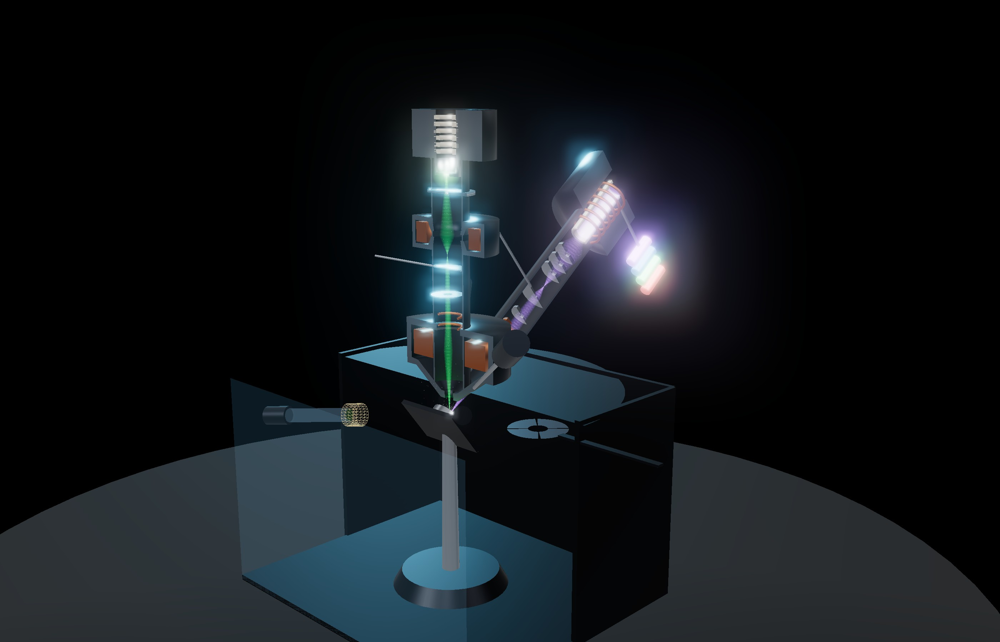
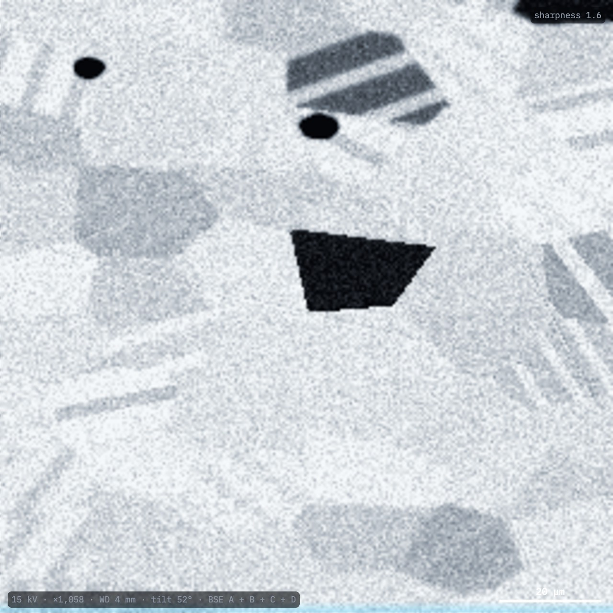
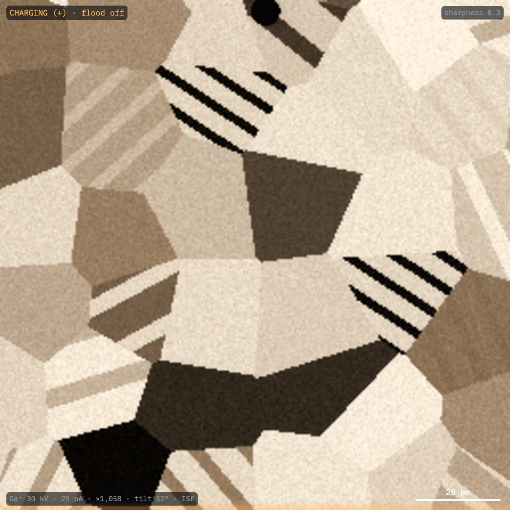
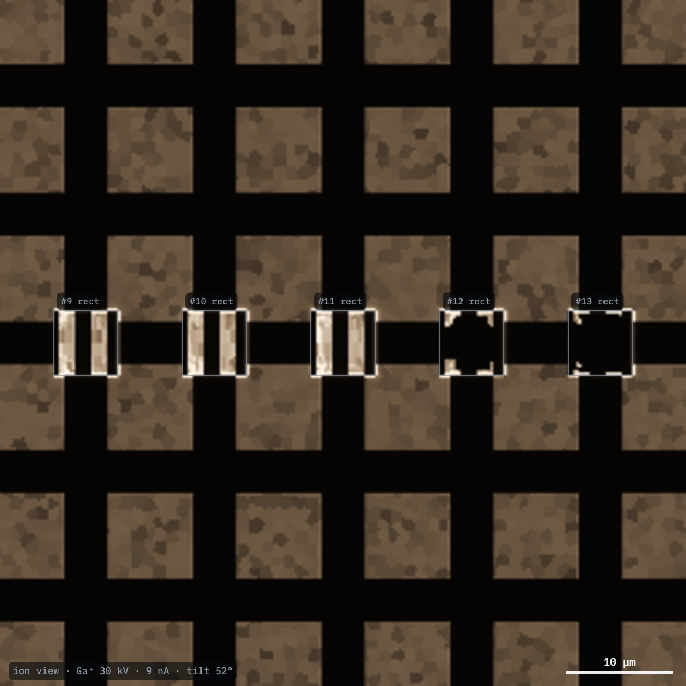
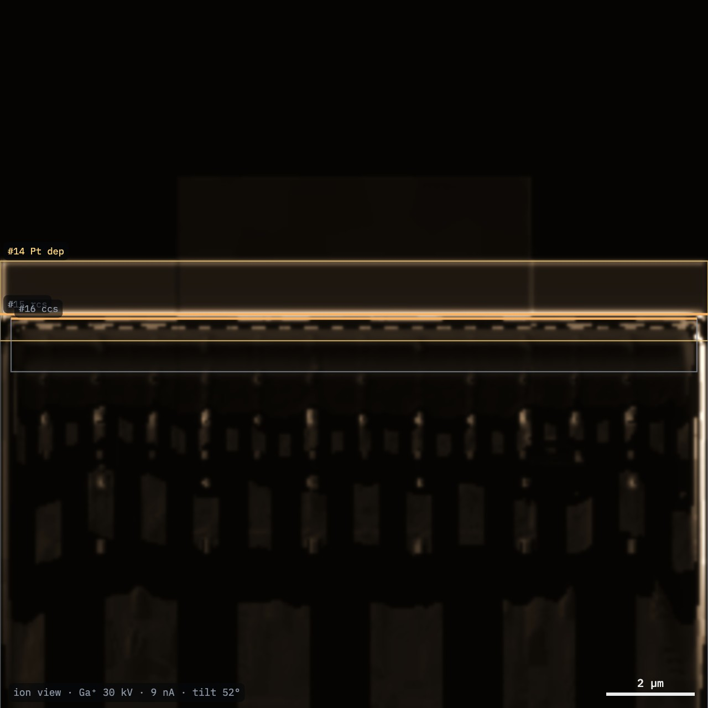
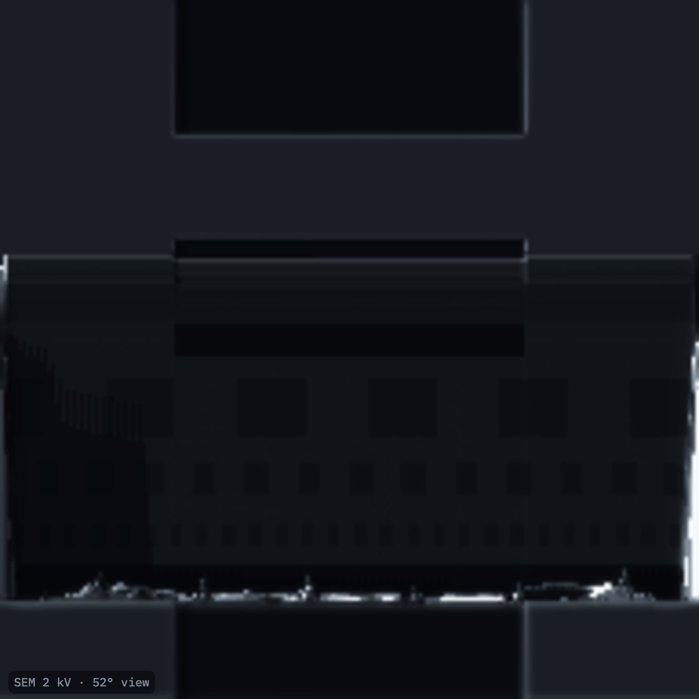
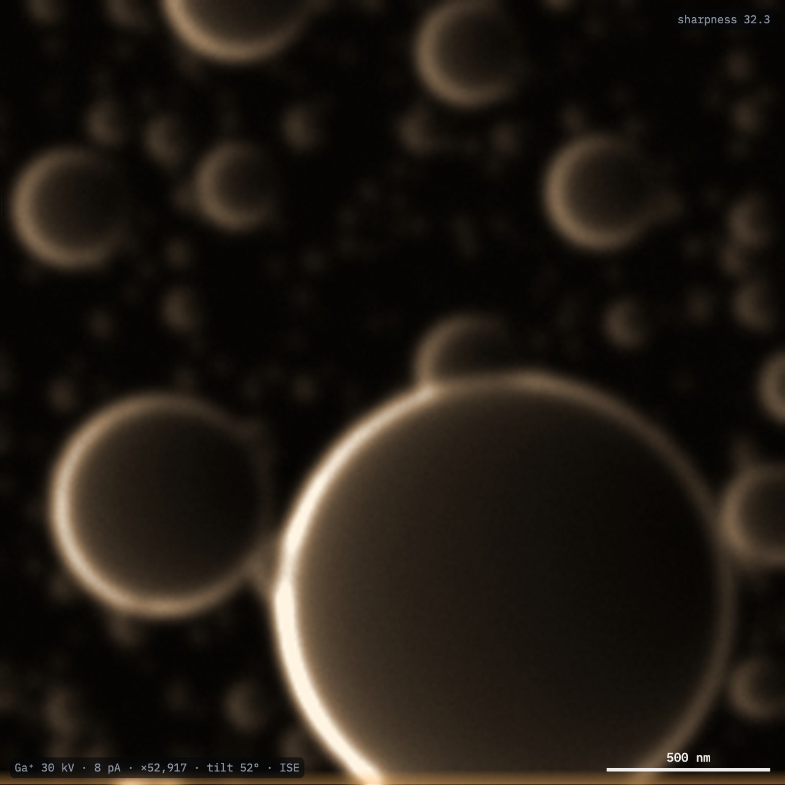
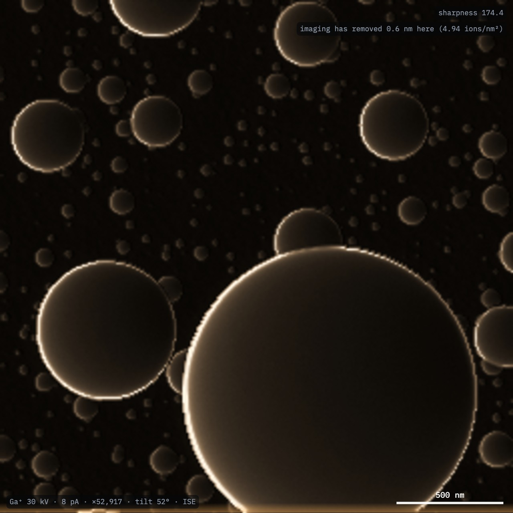

Script the FIB-view dual beam from Python: in the exhibit's IDE, headless on a desktop, or driving an open exhibit. Mill and deposit, record NumPy data from both beams, run analyses, and test automation against a hidden error.

The fibview Python package controls the simulated dual beam: it changes the settings of both beams, mills and deposits patterns to completion, records detector data as NumPy arrays with calibrations, runs analyses that also report the simulator's true values, and sets hidden errors (challenges) that score an algorithm against the truth. The same script runs in three places.
| Where | Open with | Needs | Best for |
|---|---|---|---|
| Python IDE in the exhibit | fv.connect() | A browser; Python runs in it (Pyodide) | Teaching, quick experiments, watching the exhibit respond |
| Desktop, headless | fv.connect() or fv.connect("headless") | Python 3.9+, NumPy, Node.js 20+ | Long milling runs, batch data, benchmarks, CI tests |
| Desktop, live | fv.connect("live") | The above, websockets, an open exhibit | Desktop tools driving the exhibit on screen |
| 1 | Run a first script in the exhibit's IDE |
| 2 | Install the package on a desktop |
| 3 | Learn the calls |
| 4 | Mill, deposit and measure |
| 5 | Test an automation algorithm with challenges |
| 6 | Batch data and regression tests |
Instrument time is the time the operation would take on the instrument: mill() runs a pattern to completion at once and reports it. A challenge is a training task's hidden error, set up for a script instead of a person: the readings (focus, stage Z) differ from the truth by a hidden amount.
score() or reveal() while it runs is not tested by the challenge. Call them only after it has finished..py file; Open loads one; Help lists the calls.import fibview as fv
fib = fv.connect()
fib.set(mode="bse", specimen="ni", kV=15, current_pA=1000,
tilt_deg=52, fov_um=120)
sem = fib.acquire()
fv.show(sem, "SEM: backscattered electrons")
fib.set(mode="fib", ion="Ga", ion_current_pA=25)
ion = fib.acquire()
fv.show(ion, "Ion-induced electrons")
print(fib.state()["ion"])Result. Two NumPy images of the same field. The ion image shows far stronger grain contrast: ions channel down the open directions of some grains.


git clone https://github.com/Advanced-EM/FIB-view
cd FIB-view
pip install -e "tools/fibview-py[live,plot]"
python tools/fibview-py/examples/quickstart.pyfv.connect() starts the simulator in a Node.js process: no browser. If the package lives outside the repository, set FIBVIEW_ROOT to the repository folder.fv.connect("live"), then select Connect agent in the exhibit (Controls → Voice and agent) within two minutes.fv.show() draws in the IDE's output; on a desktop it uses matplotlib.| Call | Does |
|---|---|
set(**s) | mode, specimen, kV, current_pA, wd_mm, tilt_deg, fov_um, focus_um, stig, stage_z_um, ion, ion_kV, ion_current_pA, ion_focus_um, ion_stig, detector, gas, realistic, beam |
state() | Both beams, probe sizes, stage, patterns, the sputter yield under the beam |
command(text) | The exhibit's grammar: "switch to xenon" |
mill(...) | A pattern, run to completion: depth, volume, charge, measured yield, time |
deposit(...) | Pt, C or W with the ion or electron beam |
lamella(...) | The lift-out workflow: "next", "thin", "polish" |
acquire() | An Acquisition: .image, ["sem_image"], .arrays, .calibration, .save() |
analyze(name) | measure_resolution, measure_mill, sputter_yield, fit_eds, ebsd_stats, sv_fractions, lamella_thickness, ion_range |
challenge(id) | sem-focus-stig, fib-focus-stig, eucentric; then score(), reveal(), end_challenge() |
Modes: se, inlens, bse, ebsd, tkd, eds, fib, mill, gis, sv, lam, mc. Specimens: chip, ni, sn, nmc, xs. Ions: Ga, Xe, Ar, N, O. info() lists them all.
Mill the same 6 × 6 µm box, asked to reach 2 µm in silicon, with each species at ~4 nA (example mill_rates.py):
fib.set(specimen="chip", mode="mill")
for k, ion in enumerate(["Ga", "Xe", "Ar", "N", "O"]):
fib.set(ion=ion, ion_current_pA=4000)
r = fib.mill(shape="rect", w=6, h=6, depth=2,
x=-24 + 12 * k, y=0)
print(ion, r["maxDepth"], r["Yv"], r["time_s"])| Ion | Current | Depth | Yield | Time |
|---|---|---|---|---|
| Ga⁺ | 2.5 nA | 2.28 µm | 0.216 µm³/nC | 114 s |
| Xe⁺ | 4 nA | 2.18 µm | 0.288 µm³/nC | 54 s |
| Ar⁺ | 4 nA | 2.33 µm | 0.141 µm³/nC | 113 s |
| N⁺ | 4 nA | 2.02 µm | 0.038 µm³/nC | 366 s |
| O⁺ | 4 nA | 1.80 µm | 0.042 µm³/nC | 309 s |
The gallium column's nearest aperture to 4 nA is 2.5 nA. Each pattern's dose comes from the silicon application file, so the depths are similar and the times show the speed. The oxide and copper of the chip mill at their own rates.

fib.deposit("Pt", x=6, y=7.2, w=16, h=1.8, thickness=1.2)
fib.set(ion="Ga", ion_current_pA=9000)
fib.mill(shape="rcs", x=6, y=1.9, w=16, h=10, depth=8)
fib.set(ion_current_pA=800)
fib.mill(shape="ccs", x=6, y=6.2, w=15.5, h=1.2, depth=8)
a = fib.acquire() # a["sem_image"]: the face at 52°

A challenge hides an error, as a training task does for a person. Your algorithm sees only the images and the readings; score() judges the true result afterwards. Example auto_focus_ion.py focuses the ion beam on tin spheres. Every image it takes sputters the sample, and the score counts that damage too. Focus first, then the stigmator, then focus again: astigmatism moves the best focus. With seed 7 it scores 100: 4 nm of blur on a 5.3 nm probe, after 37 frames that removed 4 nm of tin.
import numpy as np, fibview as fv
fib = fv.connect()
fib.challenge("fib-focus-stig", seed=7)
def sharpness():
img = fib.acquire(steps=2)["ion_image"]
gy, gx = np.gradient(img.astype(float))
return np.mean(np.hypot(gx, gy)) / img.mean()
def search(key, lo, hi, n=7):
best = None
for v in np.linspace(lo, hi, n):
fib.set(**{key: float(v)})
s = sharpness()
if best is None or s > best[1]:
best = (v, s)
fib.set(**{key: float(best[0])})
return best
f, _ = search("ion_focus_um", -100, 100, n=9)
a, _ = search("ion_stig", -60, 60, n=9)
search("ion_stig", a - 10, a + 10)
f, _ = search("ion_focus_um", f - 25, f + 25)
search("ion_focus_um", f - 6, f + 6, n=5)
print(fib.score()) # blur vs the probe, imaging damage
print(fib.reveal()) # the hidden error
fib.end_challenge()| Challenge | Hidden | Scored on |
|---|---|---|
sem-focus-stig | Electron defocus, astigmatism | Blur relative to the probe |
fib-focus-stig | Ion defocus, astigmatism | Blur, and material removed by imaging |
eucentric | Stage height; the Z reading is offset | Distance from the coincidence point |


acquire() returns every array of the current mode and its metadata (pixel sizes, beams, patterns with their depth maps, the lamella's true geometry). a.save("run.npz") writes the same NumPy archive as the exhibit's Export button.
import numpy as np, fibview as fv
fib = fv.connect()
fib.set(specimen="nmc", mode="sv") # slice & view
a = fib.acquire()
stack = a["stack"] # slices × depth × x
truth = a["truth_labels"] # the true phases
print(a.calibration["fractions"])
a.save("cathode.npz")node tools/headless.mjs --mode mill --spec chip \
--ion Xe --mill rcs:16x8x6 --out xsec.npzChallenges take a seed, so the same hidden error comes back every run: an automation routine can be tested in CI:
# tests/test_autofocus.py
import fibview as fv
def test_ion_autofocus():
with fv.connect("headless") as fib:
fib.challenge("fib-focus-stig", seed=7)
my_autofocus(fib)
s = fib.score()
assert s["success"], sThe package's own tests: pytest tools/fibview-py/tests.
The same instrument is available to AI agents through the MCP server tools/fibview-mcp: headless simulate, mill and ion_physics tools, and live control of an open exhibit.
The link opens FIB-view with the Python IDE and the Quick start example loaded. Select Run.
github.com/Advanced-EM/FIB-view
tools/fibview-py
SOP-01 TEM lamella lift-out: the workflow lamella() runs.
Python in the browser: pyodide.org